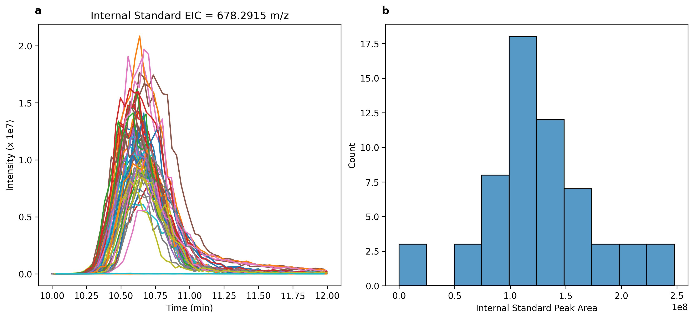

Typical Workflow
Here, we outline a typical workflow for using CoreMS and CoreMSTools to process CoreMS assignments of large, multi-sample LC-MS datasets. The overall goal of the workflow is to generate a feature list. A feature list is a list of assignments that are least likely to be erroneous and, importantly, it includes the abundance of these assignments in each sample in the dataset. In addition to including molecular formulas and the intensities, feature lists also typically include - at a minimum - the measured m/z, assignment error, and retention time of each ion.
- The steps of a typical workflow can be divided into three groupings.
Formula assignments
Quality control
Feature filtering
Formula assignments
CoreMSTools only works with assignments generated by CoreMS. If you are new to using CoreMS for formula assignments of LC-MS data, check out the CoreMS Primer section.
Creating an Assignments object
After CoreMS assignments are complete, they can be loaded into an Assignments object. To do this, a dataframe containing a column with the name of each raw file in the dataset is required. We also need to define the directory in which the assignment results are located.
from coremstools.Parameters import Settings
Settings.assignments_directory = "/Volumes/IQX-Data/"
flist = []
for f in os.listdir(Settings.raw_file_directory):
if '.raw' in f:
flist.append(f)
df = pd.DataFrame({'File':flist})
Now we can make an Assignments object:
assignments = Assignments(sample_df=df)
Quality control
Internal standard check
With this assignments object, we can run quality control checks on our internals standard.
assignments.run_internal_std_qc(std_timeframe = [10,12])
Running this method produces (a) a plot of the EICs of the internal standard m/z for each sample in the dataset, overlaid on one another; and (b) a histogram of the peak areas for the internal standard in each sample (Figure 1). If the peak area of the internal standard in a given sample exceeds 2 times the standard deviation of the mean peak area, the sample is flagged in the sample list as not passing the quality control test.

Figure 1. (a) Overlain EICs corresponding to the m/z of the internal standard. EICs of the standard are shown for each sample in the dataset (60 samples total). (b) Histogram of peak areas of the internal standard EIC in all samples in the dataset.
Examine assignment error distributions
We can also plot the m/z error for each assignment across the mass range. This allows us to evaluate the calibration and whether there is a systematic drift in the data.